Readings
CSS3 Transforms and Transitions
Transforms
The CSS3 transform property lets you lets you translate, rotate, scale, and/or skew any element on the page. While some of these effects were possible using previously existing CSS features (such as translating with relative and absolute positioning), CSS3 gives you unprecedented control over many more aspects of the element’s appearance.
Translation
Translation functions allow you to move elements left, right, up, or down. These functions are similar to the behavior of position: relative; when declaring top and left , moving elements up and down or left and right along the x and y axes. When you employ a translation function, you’re moving elements without impacting the flow of the document. Unlike position: relative , which allows you to position an element either against its current position or against a parent or other ancestor, a translated element can only be moved relative to its current position. The translate(x,y) function moves an element x from the left, and y from the top:
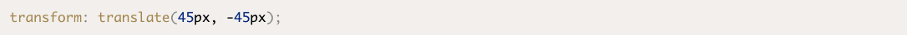Scaling
The scale(x,y) function scales an element by the defined factors horizontally then vertically. If only one value is provided, it will be used for both the x and y values, growing or shrinking your element or pseudo-element while maintaining the original aspect ratio. For example, scale(1) would leave the element the same size, scale(2) would double its proportions, scale(0.5) would halve them, and so on. Providing different values will distort the element, as you’d expect:
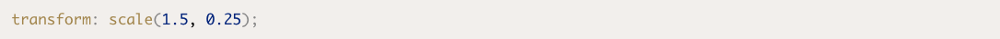Rotation
The rotate() function rotates an element around the point of origin by a specified angle value. As with scale , by default the point of origin is the element’s center. Generally, angles are declared in degrees, with positive degrees moving clockwise and negative moving counterclockwise. In addition to degrees, values can be provided in grads, radians, or turns, but we’ll just be sticking with degrees.
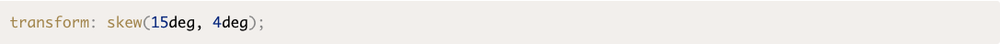Skew
The skew(x,y) function specifies a skew along the x and y axes. As you’d expect, the x specifies the skew on the x axis, and the y specifies the skew on the y axis. If the second parameter is omitted, the skew will only occur on the x axis:
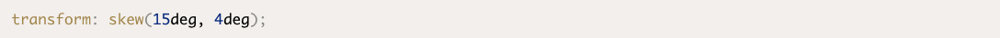Changing the Origin of the Transform
As we hinted at earlier, you can control the origin from which your transforms are applied. This is done using the transform-origin property. It has the same syntax as the background-position property, and defaults to the center of the object (so that scales and rotations will be around the center of the box by default).
Let’s say that you were transforming a circle. Because the default transform-origin is the center of the circle, applying a rotate() transform to a circle would have no visible effect—a circle rotated 90 degrees still looks exactly the same as it did before being rotated. An ellipse rotated 180 degrees around its center would also look the same as it did before being rotated upside down. However, if you gave your circle or ellipse a transform-origin of 10% 10% or top center , you would notice the rotation as Figure 8.7 illustrates.
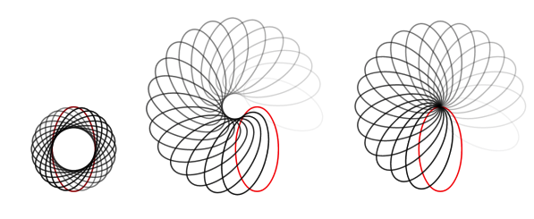 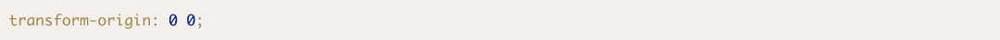Multiple Transitions
The transition properties allow for multiple transitions in one call. For example, if we want to change the color at the same time as changing the rotation and size, we can.
Let’s say instead of just transitioning the rotation, we transition the text’s color property as well. We’d have to first include a color property in the transitioned style declaration, and then either add the color property in the transition-property value list, or use the key term all :
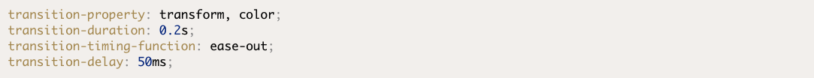Keyframes
To animate an element in CSS, you first create a named animation, then attach it to an element in that element’s property declaration block. Animations in themselves don’t do anything; in order to animate an element, you’ll need to associate the animation with that element.
To create an animation, use the @keyframes rule for IE10+ and FF16+. Include @-webkit-keyframes for all WebKit implementations followed by a name of your choosing, which will serve as the identifier for the animation. Then, you can specify your keyframes.
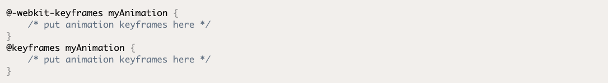Creating a canvas Element
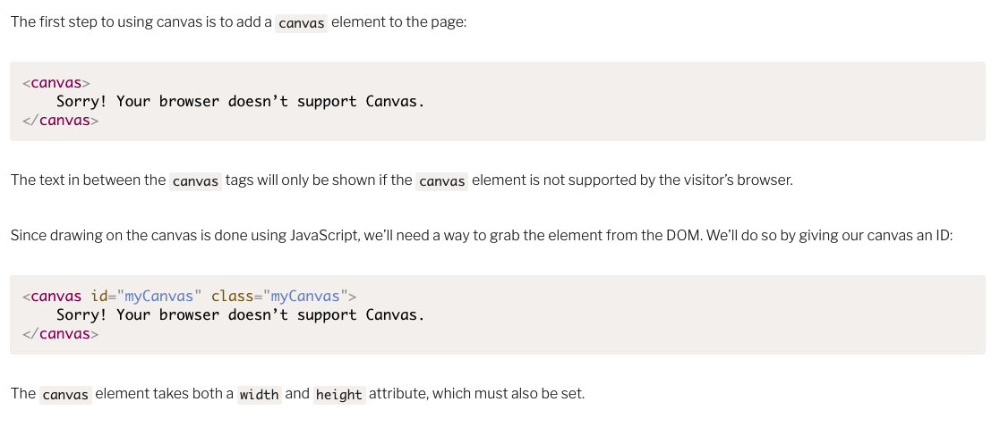 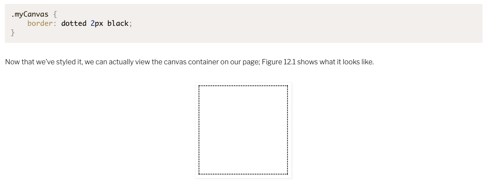Drawing a Rectangle to the Canvas
Once we’ve defined the color of the stroke and the fill, we’re ready to start drawing! Let’s begin by drawing a rectangle. We can repeat the steps we just took: grabbing the canvas and the context, and setting a fill and stroke style. But now, we’ll draw a rectangle. We can do this by calling the fillRect and strokeRect methods. Both of these methods take the X and Y coordinates where you want to begin drawing the fill or the stroke, and the width and height of the rectangle. We’ll add the stroke and fill 10 pixels from the top and 10 pixels from the left of the canvas’s top-left corner:
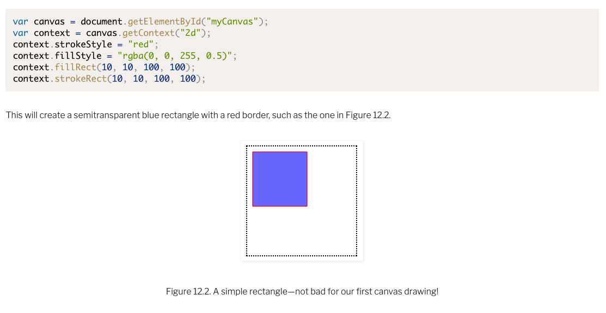